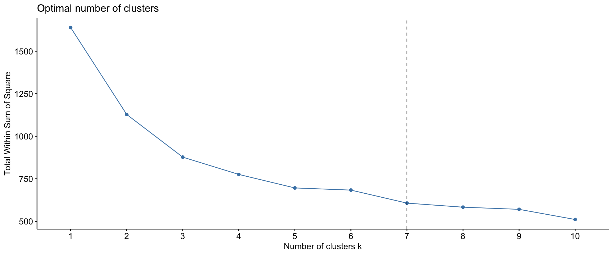
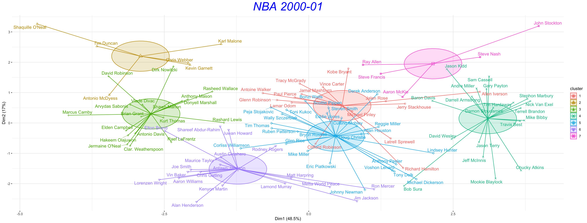
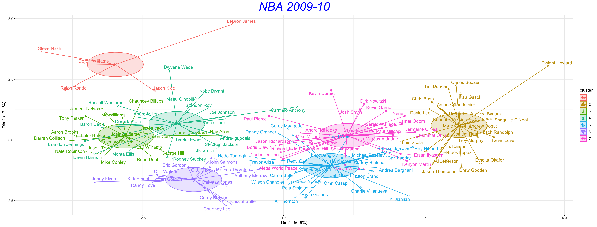
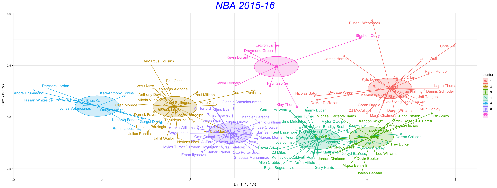
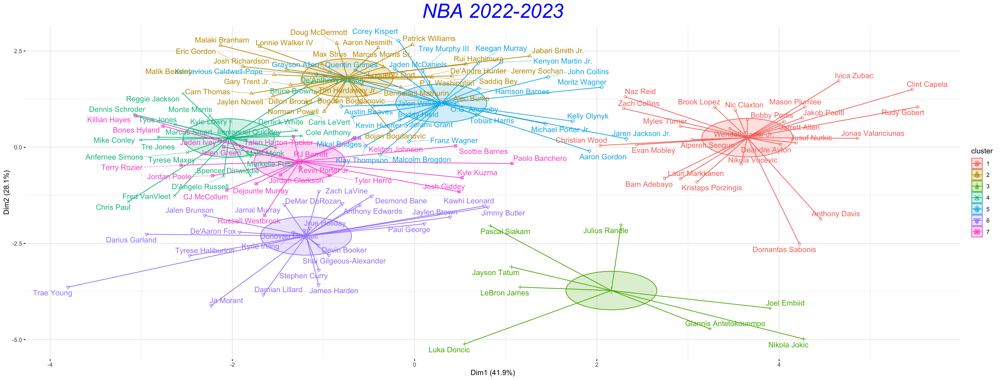
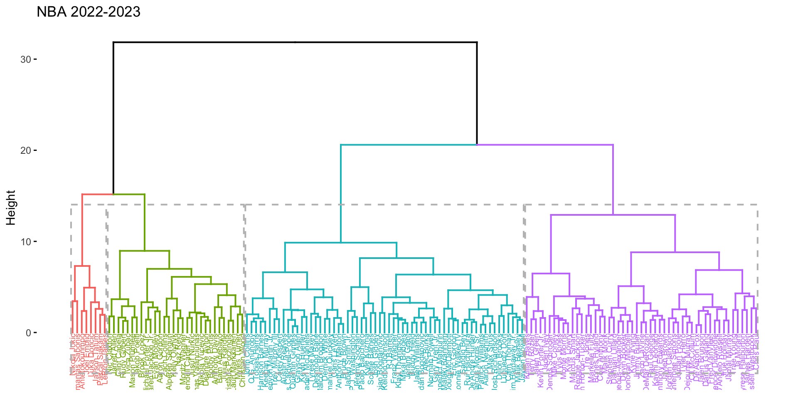
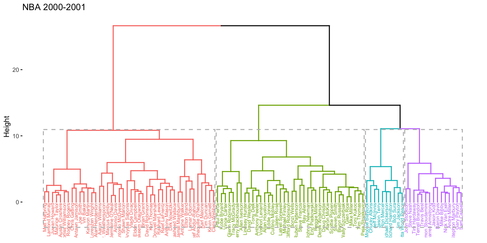
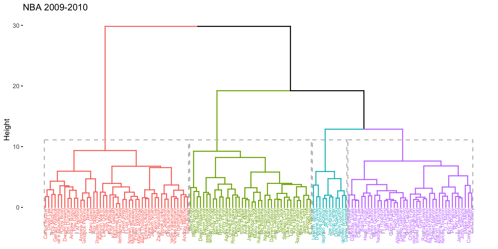
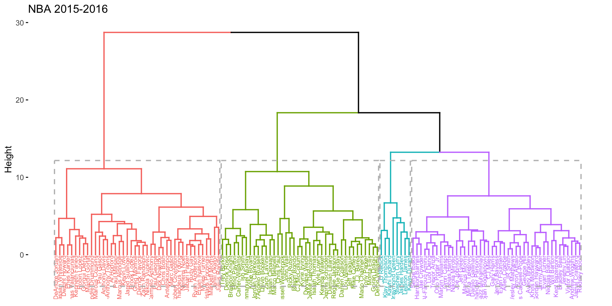

5 Clustering
5.1 k-means Clustering Of Players
To further investigate the transition in playing style and the trend toward position-less basketball, clustering analysis were conducted. This analysis used selected features including player height, weight, rebounds, assists, net rating, offensive rebounds, defensive rebounds, usage percentage, true shooting percentage, and assist percentage.
What Data Was Included
Given that more than 200 players participate in each NBA season and audiences generally remember high-scoring players, I applied specific criteria for more clear and understandable visualization results. For the selected seasons, only players who participated in more than 50 games and had an average score exceeding 10 points were included in the analysis.
Selected Season
Based on the visualization in Section 4.2, a stronger correlation between height and weight (H/W) is evident between the seasons 1996-97 and 2009-10. This suggests a traditional, center-focused playing style, with a peak occurring in the 2000-01 season. To examine how player performance styles were clustered during periods when traditional styles dominated, we selected the 2000-01 and 2009-10 seasons.
NBA fans commonly believe that the “small-ball center” and “three-point trend” popularized by Stephen Curry’s Golden State Warriors from 2015 to 2019 were catalysts for the transition in playing styles. To explore how player performance styles have evolved in more recent years, I selected the 2015-16 season and the most current season, 2022-2023.
nba_selected_season <- nba[(which(nba$season ==
"2022-23")), ]
nba_selected_season <- nba_selected_season[nba_selected_season$pts >
10, ]
nba_selected_season <- nba_selected_season[nba_selected_season$gp >
50, ]
rownames(nba_selected_season) <- nba_selected_season$player_name
selected_features <- c("player_height",
"pts", "player_weight",
"reb", "ast", "net_rating",
"oreb_pct", "dreb_pct",
"usg_pct", "ts_pct",
"ast_pct")
nba_for_clustering <- nba_selected_season %>%
select(all_of(selected_features))
df <- as.data.frame(scale(nba_for_clustering))
fviz_nbclust(df, kmeans,
method = "wss") +
geom_vline(xintercept = 7,
linetype = 2)
clustering_23 <- fviz_cluster(km_result,
data = df, ellipse.type = "euclid",
ellipse.level = 0.5,
ellipse.ratio = 0.8,
star.plot = TRUE,
repel = TRUE, main = "NBA 2022-2023",
ggtheme = theme_minimal())
clustering_23 <- clustering_23 +
theme(plot.title = element_text(size = 30,
face = "italic",
color = "blue",
hjust = 0.5,
vjust = 1, angle = 0,
lineheight = 1.2))For season 2000-01

| cluster | player_height | player_weight | pts | reb | ast |
|---|---|---|---|---|---|
| 1 | 200.3213 | 97.58276 | 23.06667 | 5.740000 | 4.360000 |
| 2 | 209.9733 | 116.49755 | 24.00000 | 11.300000 | 3.750000 |
| 3 | 209.4089 | 110.37405 | 14.03889 | 8.505556 | 1.650000 |
| 4 | 186.7568 | 84.94107 | 15.83158 | 3.736842 | 6.742105 |
| 5 | 198.7296 | 96.77839 | 13.65200 | 3.984000 | 2.472000 |
| 6 | 204.6705 | 107.38194 | 14.04211 | 6.105263 | 1.921053 |
| 7 | 191.5160 | 88.63188 | 16.12000 | 4.440000 | 6.420000 |
For season 2009-10

| cluster | player_height | player_weight | pts | reb | ast |
|---|---|---|---|---|---|
| 1 | 192.5320 | 92.16989 | 17.78000 | 4.920000 | 9.800000 |
| 2 | 210.0792 | 117.59373 | 16.15000 | 9.754167 | 1.991667 |
| 3 | 187.4253 | 84.94107 | 14.20526 | 2.705263 | 4.673684 |
| 4 | 195.1789 | 93.79805 | 19.55789 | 4.378947 | 5.252632 |
| 5 | 206.3262 | 106.50689 | 15.16923 | 5.715385 | 1.834615 |
| 6 | 193.9471 | 91.36639 | 13.10714 | 2.964286 | 2.650000 |
| 7 | 205.5446 | 107.67576 | 14.13462 | 6.519231 | 2.338462 |
For season 2015-16

| cluster | player_height | player_weight | pts | reb | ast |
|---|---|---|---|---|---|
| 1 | 189.7592 | 88.50714 | 17.87917 | 4.016667 | 6.491667 |
| 2 | 209.5500 | 114.50930 | 16.73000 | 8.585000 | 2.370000 |
| 3 | 191.5459 | 87.30312 | 13.50000 | 3.147059 | 3.817647 |
| 4 | 196.7593 | 94.16894 | 14.13929 | 3.557143 | 2.671429 |
| 5 | 211.0509 | 114.71754 | 13.36364 | 10.263636 | 1.145455 |
| 6 | 206.3262 | 104.76231 | 13.67692 | 5.723077 | 1.788461 |
| 7 | 201.0229 | 102.05820 | 23.42857 | 6.871429 | 4.957143 |
For season 2022-23

| cluster | player_height | player_weight | pts | reb | ast |
|---|---|---|---|---|---|
| 1 | 211.3280 | 113.25285 | 15.90000 | 9.196000 | 2.352000 |
| 2 | 197.4615 | 97.10229 | 13.09259 | 3.555556 | 1.855556 |
| 3 | 206.6925 | 112.09392 | 28.67500 | 9.662500 | 6.125000 |
| 4 | 189.2300 | 88.18241 | 13.73182 | 3.427273 | 5.009091 |
| 5 | 201.2462 | 98.91795 | 14.81154 | 4.538462 | 2.276923 |
| 6 | 193.2609 | 92.27639 | 24.90000 | 4.917391 | 6.239130 |
| 7 | 195.5800 | 92.41340 | 18.14737 | 4.826316 | 4.700000 |
5.2 Summary From the Clustering
H1 Versatility & Position-less Basketball
- 2000-01 Season: players are more dispersed, suggesting a distinct division between positions based on physical attributes like height and weight. For example:
- Traditional Centers: players around 7 feet tall and weighing between 250-300 lbs are prominent. These athletes typically represent traditional centers prevalent during this era (e.g., Tim Duncan, Karl Malone, Kevin Garnett, Dirk Nowitzki, Chris Webber, Shaquille O’Neal).
- Guards: athletes with heights ranging from 6’3” to 6’6” and weights between 180-210 lbs form distinct clusters, representing the roles of shooting and point guards.
- 2009-10 Season: despite the strong correlation between height and weight suggested by Visualization 4.2, players like LeBron James and Dwyane Wade begin to lead the trend toward a more versatile playing style. LeBron James, for instance, while physically dominant enough to be considered a small forward, also demonstrates the skills and agility typical of guards. He can be grouped with well-known point guards like Steve Nash, Rajon Rondo, and Jason Kidd. On the other hand, players like Russell Westbrook, originally considered point guards, start taking on more scoring roles, leading them to be identified with scorers like Kobe Bryant and Carmelo Anthony. The diverse physical attributes within this scoring cluster make the transitional trend more apparent.
- 2015-16 Season: clusters start to merge, indicating the onset of the “position-less” trend. Players of various physical attributes now perform roles previously confined to specific positions. Draymond Green (6’6”, 230 lbs), for example, plays effectively as a point guard, power forward, and even center despite having the height of a traditional small forward. Additionally, dominant forwards who aren’t traditional big men or guards but possess qualities of both are increasingly playing central roles (e.g., LeBron James, Kevin Durant, Kawhi Leonard).
- 2022-23 Season: clusters continue to converge, showcasing increasing versatility among players. Athletes with a narrow height range of 6’5” to 6’10” and weight range of 210-250 lbs are now playing multiple roles on the court—whether it’s shooting, ball-handling, or post plays. Players like Luka Dončić, Giannis Antetokounmpo, LeBron James, and Nikola Jokić can be grouped in the same cluster, despite their varying physical sizes.
H2 Evolution in Playing Style
- 2000-01 and 2009-10 Seasons: the dominance of players like Shaquille O’Neal and Tim Duncan indicates a game focused on the post and interior play, supporting the traditional center-focused style. At the same time, players like Kobe Bryant and Vince Carter, typically shooting guards, with a height-weight specification of around 6’6” and 212 lbs, show the traditional divisions in playing roles.
- 2015-16 Season: with players like Stephen Curry and LeBron James leading the clusters from 2010 to 2020, it’s evident that the style has evolved to prioritize agility, shooting range, and versatility. The game sees a rise in sharpshooters and versatile players. Stephen Curry (6’2”, 185 lbs) stands out with his unparalleled three-point shooting prowess.
- LeBron James (6’9”, 250 lbs) is a classic example of versatility. Though traditionally a forward, players like him and Draymond Green can handle the ball and pass, and effectively play the defense role as either a forward, guard, or center, embodying the essence of position-less basketball.
- 2022-23 Season: The domiannce of players like Giannis Antetokounmpo and Nikola Jokić who is traditionally regarded as big player, showcasing the prominent role in ball handling, pass, and play-making like a point guard. Meanwhile, player like Luka Dončić, standing at 6’7” and weighing around 230 lbs, is a prime example of the modern player with a forward style medium-height but can lead the role of play-making and also play inside well.
5.3 Hierachical Clustering
To present a more intuitive depiction of the nested groupings in player clustering results, and to illustrate the gradual changes and transitions between seasons, we conducted hierarchical clustering visualization. The results were consistent with previous findings.
result_23 <- dist(df,
method = "euclidean")
result_hc <- hclust(d = result_23,
method = "ward.D2")
fviz_dend(result_hc,
k = 4, cex = 0.5,
color_labels_by_k = TRUE,
main = "NBA 2022-2023",
rect = TRUE)
fviz_dend(result_hc_01,
k = 4, cex = 0.5,
color_labels_by_k = TRUE,
main = "NBA 2000-2001",
rect = TRUE)
fviz_dend(result_hc_10,
k = 4, cex = 0.5,
color_labels_by_k = TRUE,
main = "NBA 2009-2010",
rect = TRUE)
fviz_dend(result_hc_16,
k = 4, cex = 0.5,
color_labels_by_k = TRUE,
main = "NBA 2015-2016",
rect = TRUE)